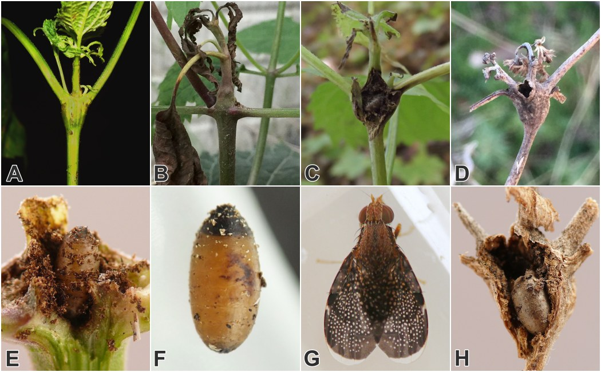
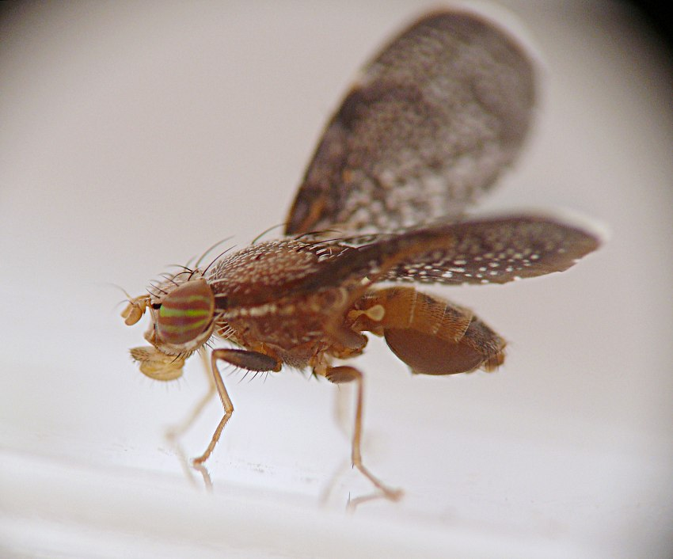
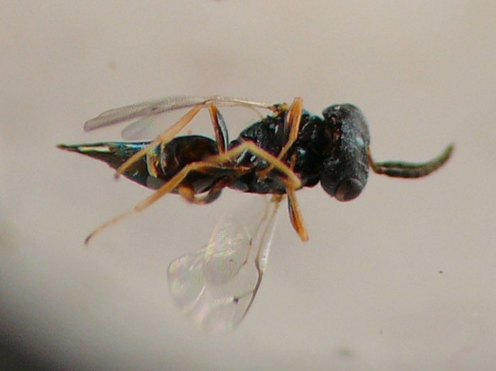

Local feeder (Diptera: Tephritidae) in stems of Ageratina
| Record no.: | 0024 |
|---|---|
| Feeding guild: | Local feeder in stem |
| Taxonomy: | Diptera: Tephritidae: Eutreta sp. |
| Stages observed: | trace, puparium, adult |
| Distribution observed: | IA |
| Hosts in Ageratina: | A. altissima (white snakeroot) |
Forms a gall in the upper stem. I observed two examples in August and a third in September, and found at least one additional, uninhabited example on a dead stem in winter. All of these galls had been established at a node on the upper stem, with the growth of the stem and leaves above the affected node becoming stunted. One of the August galls was ovoid, roughly 10-12mm long and ~8mm wide, and the other was about the same size but with a somewhat less pronounced swelling. The inner walls of the August galls were rough-textured with a dark brown color, and each gall contained a modest amount of granular frass accumulation and an intact tephritid puparium. The puparia were a yellowish-brown color overall with the anterior end darkened to nearly black. The gall observed in September had ruptured, perhaps in part as a result of the adult fly's recent emergence, resulting in the blackened gall interior becoming partially exposed, which revealed the spent puparium inside. Despite this large exposed wound, the leaves issuing from the node and the short length of stem above the node were still alive. The gall found on a dead stem in winter also displayed a large hole resulting from the adult's emergence in the previous summer, and the empty puparium was still inside the gall.
A puparium from one of the August galls produced an adult Eutreta on August 13. Similar galls on Eutrochium, Polymnia, and Galinsoga (all Asteraceae) that I found in the same local geographic area also produced adults belonging to the genus Eutreta.
See also: Ageratina stem insects compilation

 Prev
Prev
{kind=link}
{kind=link}

{kind=link}

Page created: February 9, 2026. Last update: March 30, 2026